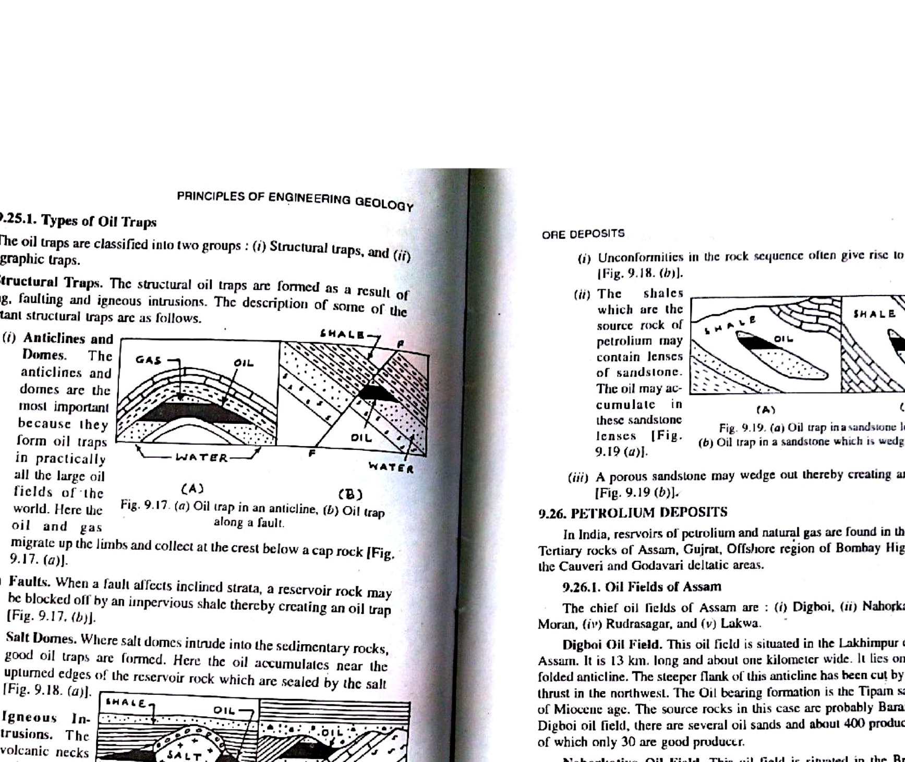

9.1 Fundamental Definitions and Tenor of Ores
Economic Geology is the scientific study of earth materials that can be extracted, processed, and utilized by human industry for economic profit. Key technical terms include:
- Ore Mineral: A naturally occurring mineral compound containing one or more valuable metallic elements that can be extracted commercially at a profit (e.g., Chalcopyrite $\text{CuFeS}_2$ for copper; Hematite $\text{Fe}_2\text{O}_3$ for iron).
- Gangue Minerals: The worthless, non-metalliferous non-metallic minerals associated with the ore in a deposit (e.g., quartz, calcite, fluorite, barite, feldspar) that must be separated during beneficiation.
- Tenor of Ore: The concentration or percentage of metal present in the ore. The lowest acceptable grade of ore that can be mined without financial loss is known as the Cut-Off Grade: $$\text{Cut-Off Grade} = \frac{\text{Mining Cost} + \text{Milling Cost} + \text{Smelting Cost}}{\text{Price per Unit Metal} \times \text{Recovery Efficiency}}$$
- Clarke of Concentration: The ratio of the average concentration of an element in an ore deposit to its average crustal abundance (Clarke value): $$\text{Enrichment Factor } (E) = \frac{\text{Grade in Ore Body}}{\text{Crustal Clarke Value}}$$ Examples: Iron needs an enrichment factor of only $\sim 4\times$ to $6\times$ (crustal abundance $5.6\%$, ore grade $\ge 60\%$), whereas Gold requires an enrichment factor of $2000\times$ to $4000\times$ (crustal abundance $0.004\text{ ppm}$, ore grade $\ge 8\text{ g/t}$).
- Syngenetic vs. Epigenetic: A syngenetic deposit forms contemporaneously with the enclosing host rock (e.g., sedimentary iron beds, magmatic cumulate chromite layers). An epigenetic deposit forms subsequent to the host rock through fracture infiltration, cavity filling, or replacement (e.g., hydrothermal quartz-sulfide veins).
9.2 Genetic Classification of Mineral Deposits
Based on physico-chemical processes of concentration, ore deposits are classified into nine primary genetic groups (Lindgren-Bateman classification):
1. Magmatic Concentration
Formed directly by crystallization, segregation, or gravitational settling from cooling silicate magmas:
- Early Magmatic Dissemination: Crystals disseminate throughout the igneous intrusive without segregation (e.g., diamonds in kimberlite pipes at Panna and Kimberley).
- Early Magmatic Segregation: Dense, early-crystallizing refractory oxides settle gravitationally to form stratiform layers at the base of ultramafic sills and lopoliths (e.g., Chromite layers in the Sukinda Valley ultramafic complex of Odisha; Bushveld complex).
- Late Magmatic Immiscible Liquid Segregation: Liquid droplets of dense, molten nickel-copper sulfides separate out like oil droplets in water, sink to the base of the magma chamber, and crystallize (e.g., Sudbury Ni-Cu deposits).
2. Pegmatitic Deposits
During the final stages of plutonic crystallization, residual volatile-rich (water, fluorine, boron, lithium) melts crystallize into coarse-grained pegmatite dikes ($T \approx 500^\circ\text{--}700^\circ\text{C}$). Pegmatites are the world's primary source of giant muscovite mica books (Bihar Mica Belt, Kodarma, Nellore), feldspar, quartz, gem beryl, tourmaline, and rare metals like Lithium (spodumene), Tantalum-Niobium (columbite-tantalite), and Cesium.
3. Contact Metasomatic (Skarn / Pyrometasomatic) Deposits
Formed at the contact zone between hot intermediate-to-felsic igneous intrusions and reactive carbonate host rocks (limestones and dolomites) under high temperatures ($400^\circ\text{--}800^\circ\text{C}$) and volatile pressure. High-temperature replacement produces calc-silicate skarns rich in andradite garnet, diopside, wollastonite, epidote, accompanied by scheelite (Tungsten), cassiterite (Tin), magnetite, and chalcopyrite.
4. Hydrothermal Deposits
Formed by deposition of metallic minerals from hot, circulating, mineral-laden aqueous solutions ($50^\circ\text{--}500^\circ\text{C}$) under varying pressures. Governed by cavity filling in fractures and metasomatic wall-rock replacement. Classified according to temperature and depth (Waldemar Lindgren):
| Hydrothermal Zone | Temperature Range | Depth & Pressure | Typical Mineral Assemblage & Examples |
|---|---|---|---|
| Hypothermal | $300^\circ\text{C} \text{ to } 500^\circ\text{C}$ | Deep ($3\text{--}15\text{ km}$), Very High Pressure | Native Gold, Scheelite, Pyrrhotite, Tourmaline, Biotite. (e.g., Kolar Gold Fields, Karnataka). |
| Mesothermal | $200^\circ\text{C} \text{ to } 300^\circ\text{C}$ | Intermediate ($1.5\text{--}4.5\text{ km}$), High Pressure | Chalcopyrite, Galena, Sphalerite, Pyrite, Quartz-Carbonate gangue. (e.g., Singhbhum Copper Belt, Jharkhand). |
| Epithermal | $50^\circ\text{C} \text{ to } 200^\circ\text{C}$ | Shallow ($<1.5\text{ km}$), Moderate to Low Pressure | Silver-Gold tellurides, Cinnabar ($\text{HgS}$), Stibnite ($\text{Sb}_2\text{S}_3$), Fluorite, Barite, Chalcedonic quartz. |
5. Sedimentary Deposits
Direct chemical precipitation, biochemical action, or mechanical sedimentation in lakes, lagoons, or shallow seas:
- Banded Iron Formations (BIF): Alternating millimetric bands of iron oxide (hematite/magnetite) and chert/jasper precipitated in Precambrian oceans due to rising photosynthetic oxygen (Iron Ore Supergroup of Odisha and Jharkhand).
- Sedimentary Manganese: Bedded oxide deposits (Gondites and Kodurites of Central India).
- Phosphorites: Marine chemical deposits rich in collophane/apatite (e.g., Jhamarkotra, Rajasthan).
- Evaporites: Halite ($\text{NaCl}$), Gypsum ($\text{CaSO}_4\cdot 2\text{H}_2\text{O}$), and Anhydrite deposited by solar evaporation of barred marine lagoons.
6. Residual Concentration
In tropical and subtropical regions with high rainfall and alternating wet and dry seasons, pervasive chemical weathering leaches away soluble silica, alkalis, and alkaline earths, leaving behind an insoluble residual crust of hydrated oxides:
- Bauxite Deposits: Residual accumulation of aluminum hydroxides (Gibbsite $\text{Al(OH)}_3$, Boehmite $\gamma\text{-AlO(OH)}$) formed over aluminous parent rocks (charnockites, gneisses, basalts). (e.g., The giant bauxite plateau deposits of the Eastern Ghats: Panchpatmali, Pottangi, Damanjodi, Odisha).
- Residual Lateritic Iron & Nickel: Hydrated iron oxides (limonite, goethite) and silicate nickel ores forming over weathered peridotites (Sukinda nickeliferous limonite).
7. Mechanical Concentration (Placer Deposits)
Dense, chemically inert, and mechanically durable minerals freed by weathering are sorted and concentrated by running water, waves, or wind:
- Alluvial Placers: Gold, platinum, and tin (cassiterite) concentrated in river gravel bars and plunge pools.
- Beach Placers: Heavy mineral black sands concentrated along coastlines by swash and backwash wave sorting. (e.g., The world-class Chavara and Manavalakurichi monazite-ilmenite-rutile-zircon sands of Kerala and Tamil Nadu, and the Ganjam coast of Odisha).
8. Oxidation and Supergene Sulphide Enrichment
When a primary (hypogene) copper sulfide deposit (chalcopyrite) is exposed to atmospheric weathering above the water table:
- Gossan (Iron Hat): The upper oxidized zone where pyrite and chalcopyrite are converted into insoluble cellular limonite and hematite, releasing sulfuric acid: $$2\text{FeS}_2 + 7\text{O}_2 + 2\text{H}_2\text{O} \longrightarrow 2\text{FeSO}_4 + 2\text{H}_2\text{SO}_4$$
- Zone of Leaching: The acidic groundwaters dissolve soluble copper as copper sulfate ($\text{CuSO}_4$) and carry it downward below the water table.
- Supergene Enrichment Zone: Below the water table in a reducing, anaerobic environment, the descending $\text{CuSO}_4$ solutions react with primary chalcopyrite and pyrite, precipitating high-grade secondary copper sulfides: $$\text{FeS}_2 + \text{CuSO}_4 \longrightarrow \text{CuS (Covellite)} + \text{FeSO}_4$$ $$5\text{FeS}_2 + 14\text{CuSO}_4 + 12\text{H}_2\text{O} \longrightarrow 7\text{Cu}_2\text{S (Chalcocite)} + 5\text{FeSO}_4 + 12\text{H}_2\text{SO}_4$$ This converts a lean $1\%\text{ Cu}$ primary ore into an ultra-rich $5\text{--}15\%\text{ Cu}$ blanket.
9.3 Fossil Fuels: Coal and Petroleum
Coal Geology
Coal is a combustible biochemical sedimentary rock formed from the compaction, heat, and biochemical alteration of ancient terrestrial plant accumulations in stagnant freshwater peat swamps. The rank progression of coal increases with progressive burial temperature and pressure:
$$\text{Peat} \xrightarrow{\Delta P, \Delta T} \text{Lignite} \xrightarrow{\Delta P, \Delta T} \text{Sub-Bituminous} \xrightarrow{\Delta P, \Delta T} \text{Bituminous} \xrightarrow{\Delta P, \Delta T} \text{Anthracite}$$As coal progresses from lignite to anthracite, the moisture and volatile matter decrease, while fixed carbon percentage and calorific value progressively increase:
- Lignite: Carbon $60\text{--}70\%$, high moisture ($30\text{--}40\%$), calorific value $\sim 3000\text{ kcal/kg}$ (Neyveli, Tamil Nadu).
- Bituminous Coal: Carbon $75\text{--}88\%$, volatile matter $20\text{--}35\%$, calorific value $6500\text{--}8000\text{ kcal/kg}$ (Gondwana coals of Jharia, Raniganj, Talcher).
- Anthracite: Carbon $>90\%$, volatile matter $<8\%$, burns with smokeless blue flame, highest heating value (Jammu & Kashmir).
Petroleum Geology
Petroleum (crude oil and natural gas) is a complex liquid mixture of naturally occurring hydrocarbons formed from microscopic marine phytoplankton and zooplankton buried in fine-grained marine muds (source rock). Under thermal cracking within the oil window ($60^\circ\text{--}150^\circ\text{C}$ at depths of $2\text{--}5\text{ km}$), kerogen transforms into liquid oil and natural gas.
An economic petroleum reservoir requires four essential geological elements:
- Source Rock: Organic-rich dark marine shale containing $>1\%$ organic carbon.
- Reservoir Rock: Porous ($>15\%$) and permeable ($>50\text{ md}$) rock (sandstone or cavernous limestone) capable of storing fluids.
- Cap Rock (Seal): Impermeable fine shale, dense evaporite, or salt bed preventing upward escape of buoyant hydrocarbons.
- Trap: Geometric structural or stratigraphic barrier that concentrates oil and gas.

9.4 Major Metallic Mineral Deposits of India
| Metal & Chief Ore Minerals | Tenor / Grade | Host Rocks & Genesis | Major Indian Producing Districts |
|---|---|---|---|
| Iron Ore Hematite ($\text{Fe}_2\text{O}_3$), Magnetite ($\text{Fe}_3\text{O}_4$) |
$60\text{--}66\%\text{ Fe}$ | Banded Iron Formations (BIF/BHJ/BHQ), Archean greenstone belts; sedimentary chemical precipitation & supergene enrichment | Odisha (Keonjhar, Sundargarh, Joda, Barbil); Jharkhand (Singhbhum, Noamundi); Chhattisgarh (Bailadila, Dalli-Rajhara); Karnataka (Kudremukh, Bellary-Hospet). |
| Manganese Ore Pyrolusite ($\text{MnO}_2$), Psilomelane |
$35\text{--}50\%\text{ Mn}$ | Gondite and Kodurite series (metamorphosed manganiferous sediments); residual caps | Madhya Pradesh (Balaghat, Ukwa); Maharashtra (Nagpur, Bhandara); Odisha (Sundargarh, Keonjhar); Andhra Pradesh (Srikakulam). |
| Copper Ore Chalcopyrite ($\text{CuFeS}_2$), Bornite, Malachite |
$0.8\text{--}2.0\%\text{ Cu}$ | Hydrothermal replacement veins, shear zones, porphyry deposits | Madhya Pradesh (Malanjkhand open cast); Rajasthan (Khetri, Kolihan, Chandmari); Jharkhand (Singhbhum Copper Belt: Mosabani, Rakha). |
| Bauxite (Aluminum) Gibbsite ($\text{Al(OH)}_3$), Boehmite |
$40\text{--}55\%\text{ Al}_2\text{O}_3$, $<3\%\text{ SiO}_2$ | Residual weathering of granulites, charnockites, gneisses, basalts in tropical monsoonal climate | Odisha (Panchpatmali, Baphlimali, Pottangi - supplies NALCO); Gujarat (Jamnagar); Jharkhand (Lohardaga); Madhya Pradesh (Amarkantak). |
| Gold Native Gold ($\text{Au}$), Calaverite ($\text{AuTe}_2$) |
$3\text{--}8\text{ g/tonne}$ | Hypothermal auriferous quartz veins in Archean greenstone schist belts | Karnataka (Hutti Gold Mines - Raichur, Kolar Gold Fields); Andhra Pradesh (Ramagiri). |
| Lead and Zinc Galena ($\text{PbS}$), Sphalerite ($\text{ZnS}$) |
$6\text{--}12\%\text{ combined Pb+Zn}$ | Hydrothermal stratabound replacement in Proterozoic carbonate rocks (dolomite) | Rajasthan (Zawar Mines, Rampura-Agucha, Rajpura-Dariba - Hindustan Zinc Ltd). |
- Ground Subsidence: Underground longwall coal mining and sublevel caving lead to surface crown collapses, sinkholes, and cracking of surface infrastructure.
- Acid Mine Drainage (AMD): Oxidation of pyrite ($\text{FeS}_2$) in mine waste dumps generates sulfuric acid, mobilizing toxic heavy metals into surface streams and groundwater.
- Open-Pit Slope Stability: Mining deep open-cast benches in bauxite or iron ore requires rigorous slope stability monitoring (limit equilibrium analysis) to avoid circular shear failures along weathered clay contacts.